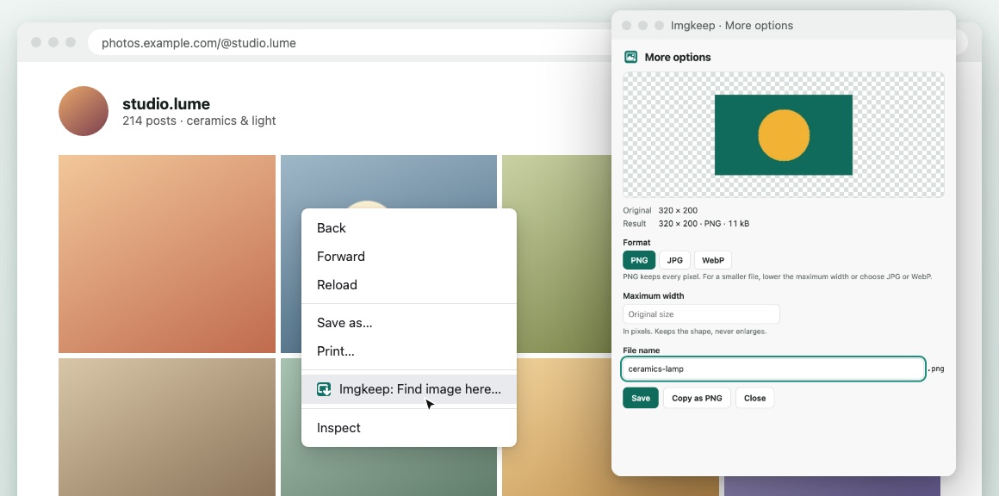

When right-click won't save an image
Short answer
On sites like Instagram and Pinterest, the photo sits under another layer, so your right-click hits the layer and Save image as never appears. Without an extension, find the image's address in the browser's developer tools, or take a screenshot. With Imgkeep, right-click and choose Imgkeep: Find image here… to open the photo at its largest size, ready to save.
Updated
Why doesn't "Save image as" appear when I right-click?
Because your right-click didn't land on the image. The browser shows the image options (Save image as…, Copy image, Open image in new tab) only when the thing directly under the pointer is an image. If the menu only offers Back, Reload and Save as…, or link options, something else is on top. The usual reasons:
- A cover layer. Many social and photo sites put a transparent layer or a link over each photo. You see the photo; your click hits the layer.
- A background image. Some pages draw a photo as the background of a box (CSS), not as an image element, so the browser doesn't treat it as an image.
- An image that exists only inside the page. Its address starts with
blob:, and it has no address you can open or save on its own. - A switched-off menu. A few sites turn off the right-click menu entirely, so no menu opens at all.
How do I save it without an extension?
It can be done, but every way is a bit fiddly.
Open the photo on its own page
Click the photo to open its own post or page, then try the right-click again. On some sites the bigger view is a plain image; on many it's covered the same way.
Find the address in developer tools
- Right-click the photo and choose Inspect. The Elements panel opens at the element under your click, usually the cover layer.
- Look just above or below it for an
<img>tag. Itssrcis the image address; asrcset, if there is one, lists bigger sizes. - Right-click the address and choose Open in new tab, then save the image from that tab.
Or use the Network panel: filter by Img, reload the page, and look for the photo among dozens of icons and thumbnails with names like a8f3e…jpg. Right-click it and choose Open in new tab.
Take a screenshot
On Windows, press Win+Shift+S; on a Mac, Cmd+Shift+4. It always works, even for blob: images, but you get the photo only at the size it's shown on screen, not the original.
How does Imgkeep find the image?
Imgkeep is a browser extension that saves images as PNG, JPG, WebP, GIF or PDF from the right-click menu. On sites that cover their images, like Instagram and Pinterest, it adds Imgkeep: Find image here… to the menu. We make Imgkeep, and here's exactly what that item does.
Our extension
Imgkeep: Find image here…
- Right-click the photo and choose Imgkeep: Find image here…
- Imgkeep looks at that page once and finds the image under your click, at the largest size the page offers.
- It opens the image in More options, where you pick the format and size, then Save or Copy as PNG.

On feeds where the cover is a link, as in many photo grids, Imgkeep uses the link you right-clicked to tell which image you meant. When it can't be sure, for example with photos side by side and no link, it shows the images on screen so you can pick one, with your likely one first. If there's no image there, it says so.
It's off until you turn it on, in Options under Images that sites cover, or the first time you use it. Turning it on adds two optional permissions, activeTab and scripting. The four permissions Imgkeep asks for at install stay the same.
Does Imgkeep read the pages I visit?
No. Imgkeep only looks at a page when you ask it to find an image there, just that page, just then. It never changes a page. It reads only the addresses of the images on screen, and nothing from the page is kept or sent. The rest of the time, Imgkeep reads only the image you right-click to save. Details are in the privacy policy, and the source code is public.
What still won't work?
- Images the page hasn't loaded yet. Many sites load photos only as you scroll to them. Scroll until the photo is on screen, then try again.
blob:images. They exist only inside the page, and Imgkeep can't save them. A screenshot works.- Protected content. Video frames and other DRM-protected content can't be saved this way.
- One image at a time. Imgkeep saves the image you right-clicked or picked, not every image on the page.
- A switched-off menu. If a site stops the right-click menu from opening at all, Imgkeep's item can't appear either. Use developer tools or a screenshot.
On other sites, where the right-click reaches the image, you don't need Find image here: the usual Imgkeep menu appears on the image itself.
Can I use the photos I save?
Saving a photo doesn't give you the right to reuse it. Keeping a picture for your own reference, a mood board or a recipe is one thing; posting it, printing it or using it in your work is another. Ask the person who took it first, and credit them.
Related guides
- Why Chrome saves images as WebP
- How to save WebP as JPG or PNG
- How to save AVIF as JPG or PNG
- Chrome saves images as JFIF? How to get JPG
- How to save an animated WebP as a GIF
- How to save an image as a PDF in Chrome
- A safe alternative to Save image as Type
- How to get an image from the web into Canva, Figma or Google Slides
Questions
Why is Save image as missing when I right-click a photo?
Your right-click didn't land on the image. The site has put another element on top of it, often a transparent layer or a link, so the browser shows the menu for that element instead, without Save image as. The image is still on the page, underneath.
Does Imgkeep read the pages I visit?
No. Imgkeep only looks at a page when you ask it to find an image there, just that page, just then. It never changes a page. It reads only the addresses of the images on screen, and nothing from the page is kept or sent. Find image here is off until you turn it on.
Can Imgkeep save every image on the page at once?
No. Imgkeep saves one image at a time, the one you right-clicked or picked. To download every image on a page, you need a bulk downloader.